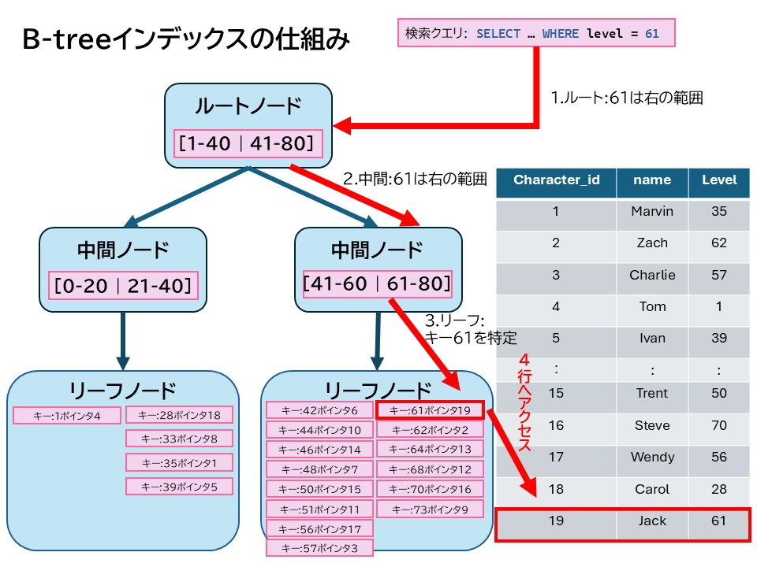

4 B-treeと探索コスト
インデックスが高速な理由は、「データ構造」と「探索アルゴリズム」にあります。多くのRDBMS（PostSQL/MySQL/Oracleなど）では、B-tree(Balanced Tree)というデータ構造が標準的に使われています。
4.1 B-treeとは
B-treeとは、各ノードが複数のキーをもち、常に期の高さがほぼ一定に保たれる平衡木構造です。
まず、B-treeは平衡木（Balanced Tree）と呼ばれています。これは、どのデータを探す場合でも、木の一番上から一番下まで進む距離がほぼ同じになるように保たれているというイメージです。そのため、たまたま特定のデータを探すのに時間がかかる、ということが起きません。またB-treeは多分木です。これは、、1つの分岐点で「右か左か」の2択ではなく、複数の範囲に一度に振り分けることができる構造を持っているいめーじです。このおかげで、木の高さを抑えることができ、探索回数が減ります。
さらに、B-treeの中ではキー（値）が常に昇順で並んで管理されています。そのため、探索時にはある程度の範囲の絞りこんでから次のノードに進むことができます。
4.2 B-treeによる探索の仕組み
x_charactersテーブルにつぎのようなインデックスを作成します。
CREATE INDEX idx_characters_level
ON x_characters(level);
このインデックスではキーにlevel、値に該当行へのポインタがB-treeに格納されます。この時levelが61であるキャラクターを探すSQL実行します。
SELECT
name, level
FROM
x_characters
WHERE
level = 61;
するとB-treeの探索が以下の手順で進みます。

ここで登場するのが探索コストという考え方です。
4.3 探索コストの計算
アルゴリズムとデータ構造でも学びましたが、データベースでいう探索コストとは、目的のデータを見つけるまでに、どれだけ手間がかかるかを表す考え方です。ここでいう手間とは、「この行か？違うな」と確認した回数や、ディスクやメモリからデータを読み込んだ回数のことを指します。
例えばフルテーブルスキャンでは、インデックスを使わずに先頭から順番に比較していくため、最悪の場合はすべてのデータを確認します。この方法では、データが増えるほど確認する行も増えていくため、データが多いほど、時間がかかるという特徴があります。テーブルの列数（データ数）を $n$ として表すと、
\[
探索コスト = O(n)
\]
と表すことができます。一方で、B-treeインデックスを用いると1回の比較で検索範囲を大きく絞り込めるため、探索回数は木の高さに依存します。ここでB-treeの高さ $h$ は、
\[
h \approx \log_b n
\]
と表されるため、探索コストは、
\[
探索コスト = O(\log n)
\]
となります。この探索コストを100万件のデータで比較してみると、フルテーブルスキャンの場合は
\[
探索コスト = O(1000000) = 1000000
\]
となりますが、B-treeインデックスを用いると、
\[
探索コスト = O(\log 1000000) \approx O(20)
\]
と表すことができ、圧倒的に少ない回数で目的のデータを見つけることができます。つまり $n$ が大きくなるほど、$O(n)$ と $O(\log n)$ の差はさらに大きくなることがわかります。
4.4 非SARGable（Search Argument Able）
ここまでインデックスのメリットを説明してきましたが、例えば下記のようなSQLを実行するとします。
SELECT *
FROM x_characters
WHERE level + 1 = 61;
このコードは、levelに1を足した値が61になる（つまりlevelが60になる）行を検索しています。これは一見すると、インデックスを使用できそうですが、実際には使用できません。インデックスは「加工前の値」でソートされています。内部的には、全ての行を計算してから比較するため、B-treeの順序性を利用することができず、結局フルテーブルスキャンになってしまいます。一般的にこの現象は、関数適用により索引が無効化される（Index invalidation by function application）と表現され、こういった条件を非SARGable（Search Argument Able）と呼び、インデックスを有効に活用するためには、検索条件がSARGableであることに注意する必要があります。
このようにINDEX設計では、インデックスのメリットを最大限に活かすために、SQLの書き方や条件指定の方法にも注意が必要になります。
4.5 処理時間の計測
ここからはa_charactersテーブルを用いて、インデックスの有無やSQLの書き方による処理時間の違いを確認します。まずは10万件のデータが入ったa_charactersテーブルに対して、levelが50である行を検索するSQLの実行時間を計測してみましょう。
EXPLAIN ANALYZE
SELECT *
FROM a_characters
WHERE level = 50;
実行時間を計測したいときは、EXPLAIN ANALYZE を使用します。EXPLAIN はSQLの実行計画を表示し、ANALYZE は実際に実行してその処理時間を計測します。実際に上記のコードを実行すると以下のような出力が得られます。
QUERY PLAN
------------------------------------------------------------------------------------------------------------------
Seq Scan on a_characters (cost=0.00..2387.00 rows=1003 width=62) (actual time=0.682..182.210 rows=1013 loops=1)
Filter: (level = 50)
Rows Removed by Filter: 98987
Planning Time: 0.830 ms
Execution Time: 182.640 ms
(5 行)
まずSeq Scanは、テーブル全体を順番にスキャンすることを意味します。そしてExecution Timeが処理時間を指し、Rows Removed by Filterはフィルタリングによって除外された行数を示しています。ここでlevelの列にインデックスを作成し、再度実行してみましょう。
CREATE INDEX idx_a_characters_level
ON a_characters(level);
インデックスを作成した後、同じSQL を再度実行すると、以下のような出力が得られます。
QUERY PLAN
------------------------------------------------------------------------------------------------------------------
Bitmap Heap Scan on a_characters (cost=12.07..1175.45 rows=1003 width=62) (actual time=1.388..2.974 rows=1013 loops=1)
Recheck Cond: (level = 50)
Heap Blocks: exact=674
-> Bitmap Index Scan on idx_a_characters_level (cost=0.00..11.82 rows=1003 width=0) (actual time=1.280..1.281 rows=1013 loops=1)
Index Cond: (level = 50)
Planning Time: 1.632 ms
Execution Time: 3.129 ms
(7 行)
ここでは、level列にインデックスを作成した後に EXPLAIN ANALYZE を実行した結果を示しています。
まずBitmap Index Scanは、作成したインデックス（idx_a_characters_level）を利用して、level = 50に該当する行の位置をインデックス上から取得していることを意味します。インデックスはB-tree構造で管理されており、条件に一致する値を効率よく探索することができます。この段階では、実際のテーブルデータではなく、インデックスのみを参照しています。
次にBitmap Heap Scan は、インデックスから取得した行の位置情報をもとに、実際のテーブル（ヒープ領域）から該当データを読み込む処理を示しています。Bitmap方式では、まず一致する行番号をまとめて収集し、その後まとめてデータ本体を読み込むため、ランダムアクセスを減らし効率的にデータを取得 できます。
Recheck Cond は、ヒープから読み込んだデータが本当に条件（level = 50）を満たしているかを再確認していることを示します。
Heap Blocks: exact=674 は、実際に読み込んだデータブロックの数を表しています。これはテーブル全体ではなく、該当する部分のみを読み込んでいること を意味します。
Actual time は実際に処理にかかった時間を示し、Execution Time: 3.129 ms がクエリ全体の実行時間を表しています。
インデックスなしの場合はSeq Scanによりテーブル全体を走査していましたが、インデックス作成後はインデックスを利用することで、必要なデータのみを効率的に取得している ことが分かります。このように、インデックスを適切に作成することで検索性能が向上することが確認できます。
SQLドリル
-
ex-02_1.sql👉job_idのインデックスを作成するSQLを記述せよ。
模範解答
-
ex-02_2.sql👉「job_id = 3かつlevel >= 70」のキャラクターを検索せよ。また単一インデックスと複合インデックスの違いを比較せよ。
模範解答
-
ex-02_3.sql👉レベル順でソートして上位100件を取得せよ。またインデックスでソートが高速化されるか確認せよ。
模範解答
-
ex-02_4.sql👉SSRアイテムを持つキャラクターを取得し、a_character_items にインデックスを作成して比較せよ。
模範解答